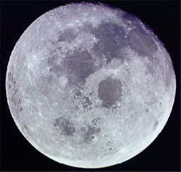

Earth's Moon

Moon Images
Moon Craters
Moon and Tides
Moon and Sun Tides
Moon Phases
Lunar Eclipse
Moon Data
Solar Eclipse
Moon and Earth to scale
How did the Moon form?
Moon's role in Earth's habitability
Apollo program for Moon exploration
Index
Solar System Illustration
Solar System Concepts
HyperPhysics
**********
Astrophysics
R Nave
Go Back